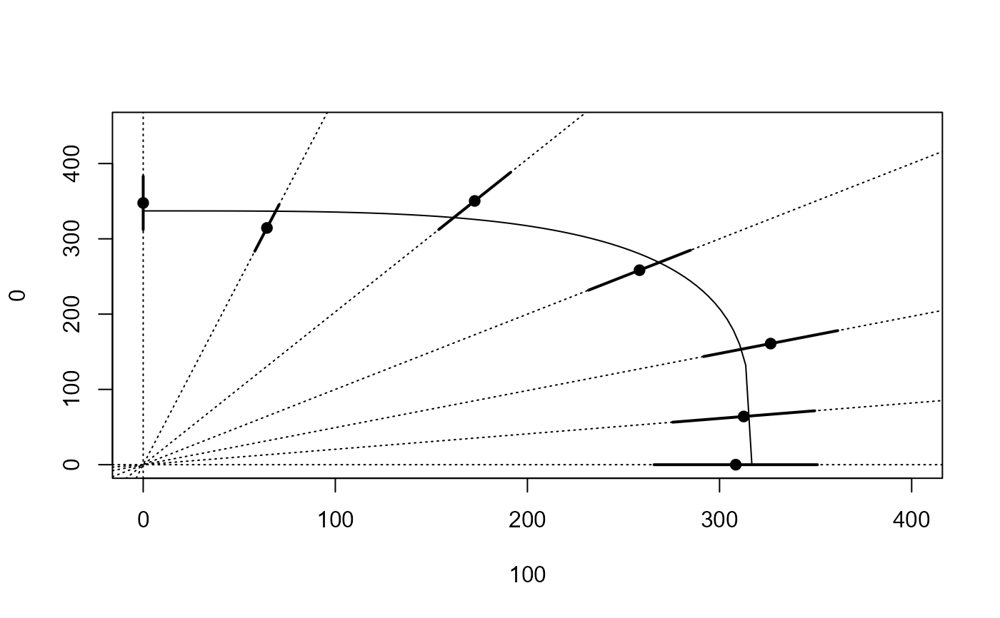

Acifluorfen and diquat tested on Lemna minor.
acidiq.RdData from an experiment where the chemicals acifluorfen and diquat tested on Lemna minor. The dataset has 7 mixtures used in 8 dilutions with three replicates and 12 common controls, in total 180 observations.
Usage
data(acidiq)Format
A data frame with 180 observations on the following 3 variables.
dosea numeric vector of dose values
pcta numeric vector denoting the grouping according to the mixtures percentages
rgra numeric vector of response values (relative growth rates)
Details
The dataset is analysed in Soerensen et al (2007). Hewlett's symmetric model seems appropriate for this dataset.
Source
The dataset is kindly provided by Nina Cedergreen, Department of Agricultural Sciences, Royal Veterinary and Agricultural University, Denmark.
References
Soerensen, H. and Cedergreen, N. and Skovgaard, I. M. and Streibig, J. C. (2007) An isobole-based statistical model and test for synergism/antagonism in binary mixture toxicity experiments, Environmental and Ecological Statistics, 14, 383–397.
Examples
library(drc)
## Fitting the model with freely varying ED50 values
## Ooops: Box-Cox transformation is needed
acidiq.free <- drm(rgr ~ dose, pct, data = acidiq, fct = LL.4(),
pmodels = list(~factor(pct), ~1, ~1, ~factor(pct) - 1))
#> Control measurements detected for level: 999
## Lack-of-fit test
modelFit(acidiq.free)
#> Lack-of-fit test
#>
#> ModelDf RSS Df F value p value
#> ANOVA 123 0.023854
#> DRC model 164 0.046386 41 2.8337 0.0000
summary(acidiq.free)
#>
#> Model fitted: Log-logistic (ED50 as parameter) (4 parms)
#>
#> Parameter estimates:
#>
#> Estimate Std. Error t-value p-value
#> b:100 1.3589e+00 1.1035e-01 12.3150 < 2.2e-16 ***
#> b:83 1.7675e+00 1.5803e-01 11.1846 < 2.2e-16 ***
#> b:67 2.1577e+00 2.0216e-01 10.6732 < 2.2e-16 ***
#> b:50 2.2777e+00 2.2913e-01 9.9407 < 2.2e-16 ***
#> b:33 2.2302e+00 2.5416e-01 8.7746 2.177e-15 ***
#> b:17 2.5058e+00 2.6607e-01 9.4176 < 2.2e-16 ***
#> b:0 2.3076e+00 2.5911e-01 8.9060 9.250e-16 ***
#> c:(Intercept) 2.9700e-02 3.0952e-03 9.5953 < 2.2e-16 ***
#> d:(Intercept) 3.0209e-01 2.5854e-03 116.8429 < 2.2e-16 ***
#> e:100 3.0844e+02 2.1265e+01 14.5043 < 2.2e-16 ***
#> e:83 3.7660e+02 2.2280e+01 16.9033 < 2.2e-16 ***
#> e:67 4.8746e+02 2.6072e+01 18.6970 < 2.2e-16 ***
#> e:50 5.1669e+02 2.6541e+01 19.4678 < 2.2e-16 ***
#> e:33 5.2288e+02 2.8379e+01 18.4247 < 2.2e-16 ***
#> e:17 3.7891e+02 1.8619e+01 20.3515 < 2.2e-16 ***
#> e:0 3.4766e+02 1.7712e+01 19.6282 < 2.2e-16 ***
#> ---
#> Signif. codes: 0 '***' 0.001 '**' 0.01 '*' 0.05 '.' 0.1 ' ' 1
#>
#> Residual standard error:
#>
#> 0.01681793 (164 degrees of freedom)
## Plotting isobole structure
isobole(acidiq.free, xlim = c(0, 400), ylim = c(0, 450))
## Fitting the concentration addition model
acidiq.ca <- mixture(acidiq.free, model = "CA")
#> Warning: Using formula(x) is deprecated when x is a character vector of length > 1.
#> Consider formula(paste(x, collapse = " ")) instead.
#> Control measurements detected for level: 999
## Comparing to model with freely varying e parameter
anova(acidiq.ca, acidiq.free) # rejected
#>
#> 1st model
#> fct: CA model
#> pmodels: ~~~factor(pct), ~1, ~1, ~I(1/(pct/100)) - 1, ~I(1/(1 - pct/100)) - 1
#> 2nd model
#> fct: LL.4()
#> pmodels: ~factor(pct), ~1, ~1, ~factor(pct) - 1
#>
#> ANOVA table
#>
#> ModelDf RSS Df F value p value
#> 1st model 169 0.073150
#> 2nd model 164 0.046386 5 18.925 0.000
## Plotting isobole based on concentration addition -- poor fit
isobole(acidiq.free, acidiq.ca, xlim = c(0, 420), ylim = c(0, 450)) # poor fit
## Fitting the Hewlett model
acidiq.hew <- mixture(acidiq.free, model = "Hewlett")
#> Warning: Using formula(x) is deprecated when x is a character vector of length > 1.
#> Consider formula(paste(x, collapse = " ")) instead.
#> Control measurements detected for level: 999
## Comparing to model with freely varying e parameter
anova(acidiq.free, acidiq.hew) # accepted
#>
#> 1st model
#> fct: Hewlett model
#> pmodels: ~~~factor(pct), ~1, ~1, ~I(1/(pct/100)) - 1, ~I(1/(1 - pct/100)) - 1, ~1
#> 2nd model
#> fct: LL.4()
#> pmodels: ~factor(pct), ~1, ~1, ~factor(pct) - 1
#>
#> ANOVA table
#>
#> ModelDf RSS Df F value p value
#> 2nd model 168 0.048100
#> 1st model 164 0.046386 4 1.5151 0.2001
summary(acidiq.hew)
#>
#> Model fitted: Hewlett mixture (6 parms)
#>
#> Parameter estimates:
#>
#> Estimate Std. Error t-value p-value
#> b:100 1.3704e+00 1.1184e-01 12.2531 < 2.2e-16 ***
#> b:83 1.7757e+00 1.5964e-01 11.1227 < 2.2e-16 ***
#> b:67 2.1808e+00 2.0685e-01 10.5430 < 2.2e-16 ***
#> b:50 2.2925e+00 2.3345e-01 9.8198 < 2.2e-16 ***
#> b:33 2.3154e+00 2.6237e-01 8.8252 1.352e-15 ***
#> b:17 2.4666e+00 2.5919e-01 9.5167 < 2.2e-16 ***
#> b:0 2.3347e+00 2.6714e-01 8.7397 2.266e-15 ***
#> c:(Intercept) 3.0042e-02 3.0711e-03 9.7820 < 2.2e-16 ***
#> d:(Intercept) 3.0176e-01 2.5825e-03 116.8512 < 2.2e-16 ***
#> e:I(1/(pct/100)) 3.1683e+02 1.3191e+01 24.0197 < 2.2e-16 ***
#> f:I(1/(1 - pct/100)) 3.3710e+02 1.1814e+01 28.5339 < 2.2e-16 ***
#> g:(Intercept) 2.8063e-01 6.9489e-02 4.0385 8.164e-05 ***
#> ---
#> Signif. codes: 0 '***' 0.001 '**' 0.01 '*' 0.05 '.' 0.1 ' ' 1
#>
#> Residual standard error:
#>
#> 0.01692075 (168 degrees of freedom)
## Plotting isobole based on the Hewlett model
isobole(acidiq.free, acidiq.hew, xlim = c(0, 400), ylim = c(0, 450)) # good fit
